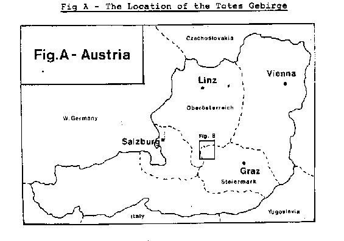
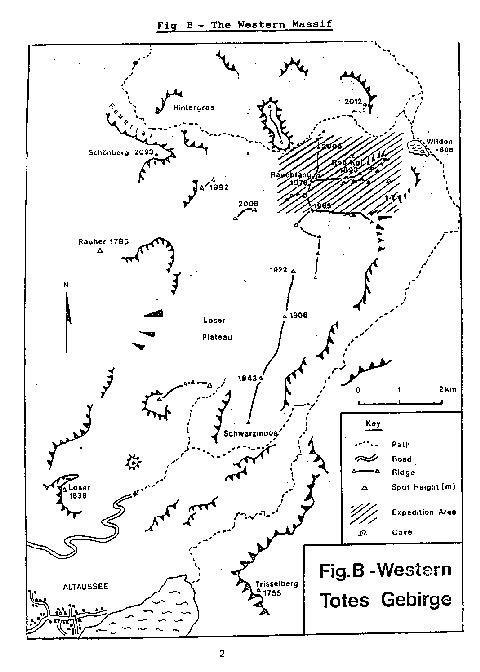
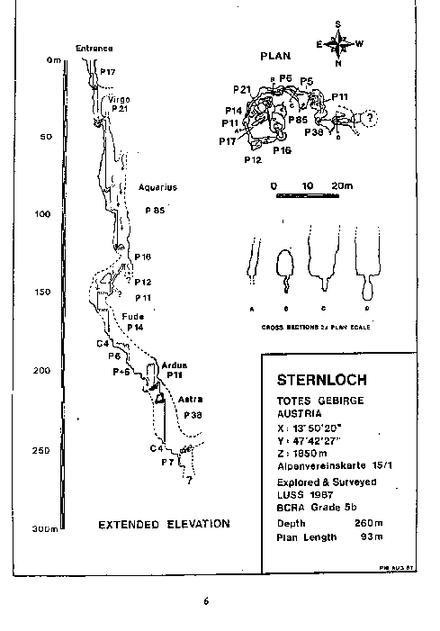

Obwohl wir nur in einem kleineren Gebeit arbeiten könnten, haben wir alle unsere Objektive erreicht. Ins Gesamt waren dreizig neue Höhleneingänge gelelgen und dreiundzwanzig von denen waren am wenigsten teilweise erforscht. Manche von dieser sind unvollendet, einschlieBlich LA12 (Sternloch), die zu einem Tiefe von 260m, bis einem steilen Abhang, enforscht war. Auch gibt es einige kleine unerforschte Gange und einen fünf Sekenden Abgrund, den wir nicht hinuntergestiegen sind.
Die expedition ging nicht ohne Probleme, namlich der L.U.S.S. Wagen
und das schlechtes Wetter auf dem Plateau. Aber trozt dieser haben wir
etwas auffallenden Erforschung gemacht. Das Gebeit hat sich von
interesse for Höhlenerforscher erwiesen sein und hat auch die
Möglichkeit fur viele neue Entdeckungen. Also, ist unsere geschlichte
eine sehr erfolgreiche Auflarungs Expedition.
Introduction
The Totes Gebirge massif lies on the border of the Austrian Provinces
of Steiermark and Oberosterreich (See figure A). Caves are known in
many areas of the massif, but it is the western plateau (See figure B)
which contains the most extensive systems.
 Figure A |  Figure B |
Over the years various groups have worked in this area concentrating on three parts of the plateau: i) The Loser/Schwarzmoos area to the south; ii) The Rauher/Raucherkarhole area and iii) the Feuertal/Hintergras area. This work has resulted in many long and deep cave systems, of which the most notable are Schnellzughohle (-971m), Feuertalsystem (-913m, 15km), Trunkenboldschacht (-854m) and Raucherkarhohle (44km over a vertical range of 725m)- the latter is currently the second longest in Austria.
However, it was not this abundance of major caves which attracted us to the Totes Gebirge. We were more interested in the vast area of apparently virgin limestone. All the known deep caves are situated near some form of easy access (Road, hut, goods lift, etc.) and there seemed to be the potential for major discoveries by anyone prepared to venture further afield. Moreover, despite its massive potential, the Totes Gebirge does not possess a single 1000m deep cave... yet!
With this in mind, a small group visited the Totes Gebirge with the
intention of prospecting the area between Wildensee, Hohes Augst-Eck
and Gr. Scheibling Kogel. We hoped to locate and explore deep alpine
cave systems and to improve our experience of the exploration,
surveying and photography of this type of system. At the outset we
couldn't realistically have hoped to meet these objectives as
successfully as was to be the case...
Sternloch - A History of Exploration
LA12 was discovered on the initial three man recce onto the plateau,
during the five days when half of the team were trapped in Belgium,
with a broken down van.
Stones dropped down the entrance, a narrow slot about one metre by metres, took two seconds to hit the floor and, occasionally, an additional "Distant Boom" could be heard. This made it a prime hole to be dropped, though it was by no means the only promising shaft to be located during the first (See notes on the other entrances found).
Once the whole team had assembled on the plateau, we immediately returned to LA12. PNI descended his discovery to find that the 17m entrance pitch was quickly followed by a second, the reason behind the occasional "Distant Boom".
The second pitch, a glorious 21m free-hang rigged off two bolts, led to a squeeze and a ledge large enough for two. The rocks dropped from here fell for some four seconds before rumbling on into the depths. We could not believe our luck at having found a cave that was going, and going big, on the very first day of underground exploration. At this point we excitedly prussiked out to get more rope, and to tell the others that we had a "Monster on our hands".
Two hours later we had our rope, had polished off our daily ration of tuna, and were dropping into the huge undescended shaft. At a ledge 44m down, we met a constant and heavy flow of melt water and as we had used up our supply of tackle, we left the next section of the big pitch for Mike and Simon to push the following day.
From the ledge to the bottom of the pitch required three rebelays and a deviation which all had to be rigged unavoidably in the water. The combination of getting drenched in the freezing cold water and the constant draught made this pushing trip particularly desperate, with Mike on one occasion resorting to his survival bag whilst waiting for part of the big pitch to be bolted. Later on we called the pitch "Aquarius" which not only followed on well with our star theme ("Stern" is German for "Stars", and the cave was so called because on the night before the first pushing trip the sky had been especially clear as we gazed up from our bivies), but was also quite apt, given the wet nature of the pitch.
At the bottom of Aquarius it was possible to temporarily escape from the main body of the water by descending a narrow 16m shaft. The route did not remain dry for long. Most of the water could be heard to rejoin the way on in a large open shaft, as yet unexplored, because it was possible to avoid the water by sliding through an eye-hole and on to a pair of sloping pitches. However, these led onto what was probably the wettest pitch in the entire cave, a short, but drenching free hanging P11.
Simon and Mike broke off their pushing trip at this point, having rigged a section of the cave affectionately known as the "Wet Cold and Scary Series". During their cold seven hour pushing trip another team; PNI, RB and PDO had surveyed down to the bottom of Aquarius. It was five very cold and sodden cavers that emerged that evening.
By now our limited supplies of food, which had to be lugged along a 5-6 hour trek from the nearest car park, had run out and so all 6 members of the expedition left the top camp in order to carry up the rest of the rope and eight days food supply.
Two days later, four of the team were back on the plateau, while Mike and Simon were left in Altausse to negotiate with the garage; our ailing van was once more in need of attention.
On a short trip PDO, PNI and RB took the photographic evidence from the entrance pitch to the bottom of "Aquarius" and on the following day, armed with 120m of rope, pushed the 11m undescended shaft left by the previous trip.
The second pitch pushed, "FUDE", was, in contrast to the rest of the cave, dry. The water from the pitch above was lost, leaving a dry sandy chamber. However, the rock here was crumbly, meaning that bolt anchors would not be satisfactory. The pitch was rigged from naturals, but even these were dubious. We also run out of rope protectors and so an empty tackle bag was used to prevent any rubbing. Further down Paul Oldham put his first underground bolt in for a deviation (It was fortunate that the bolt was for a deviation, as it was only suitable for minimum loading!!).
Below "FUDE" we came to a tight, but short-lived rift which gave way to a pitch, once more joined by water, for which the rope we had was too short. This resulted in an entertaining 2-3m free climb to the bottom.
The tight section, "Nil Desperandum", thankfully did not set the tone for the rest of the cave, although at one stage it did seem as though it might. Fortunately PNI climbed into a side chute that by-passed the next tight rift and led onto "Ardua".
At the bottom "Ardua", a fine 11m free hang n a spacious shaft, a short climb down between boulders led to a still pool, and no way on. Thinking that this was it, I shouted up to the others, "You're not going to like this lads", but I had spoken too soon. A crack in the wall not far from where the rope had landed, partly obscured by a huge boulder, led onto another large drop, and the way on.
The bolts placed at the top of "Astra" took time. Firstly, a solid anchor point was not easy to locate as much or the rock simply crumbled away, and secondly the whole wall was covered in a couple centimetres of mud.
Nevertheless a 'Y' hang was placed, and the large boulder was used as a back up. In the time taken to place these two bolts, all of us had been struck by the coldness of the place. Once your body was stationary, even for just a few minutes in this cave, the cold penetrates fast and deeply. This was not only uncomfortable, but also energy sapping. Sternloch is no place to hang around in (Except on the pitches!!?).
The lower part of "Astra" is reached by penduluming across onto a large slimy rock that was wedged into the shaft. Bolts placed here give access to a beautiful free hanging pitch which lands back in more major rift development.
The intense cold had by this time taken its toll and after a couple of climbs and a 7m pitch, came PDO's news that he had found another enormous shaft. This we left for the next team. We prussiked out, cold and wet, but pleased with what we had pushed. This was the coldest trip that any of us had undertaken, and by the time we reached "Virgo" it was great to be able to shout to those on the surface to "Put the hot chocolate on". That night Simon and Mike arrived back from Altausse and on the following day were to survey the known cave so far. Unfortunately they forgot the tape, but took all of the other readings! On the same day another team photographed down to "Astra".
For the last six days of the expedition it rained solidly. Up until
then we had been quite successful with our bivvies on the mountain,
but so far we had been fortunate to have good, i.e. dry nights. For
the last six nights the rain was torrential, putting our gear to the
test. It failed! For those who had Goretex bivy bags, the first two
nights were spent completely wet and awake. Only Mike in his "Rambo
shelter" had a dry night. Given that our pits were sodden, our caving
gear, which had been left out in the sun to dry, was sodden, that all
of our clothes were wet, and that we had no shelter on the mountain
from the elements, not to mention that the cave was extremely
aquarious at the best of times, we decided, wisely to forfeit two days
of further pushing and return to what we hoped were sunnier climes
back down in the valley. We did manage to dry our pits, but this only
left us with enough time to finish off the surveying and to detackle.
Sternloch Description
The entrance to Sternloch, numbered LA12, is situated on the flat col
to the south of RoB Kogel (1893m) slightly above and to the west of a
small, but prominent rock shelter.
A narrow slot (1m x 5m), with a small capping roof, soon bells out to a landing after 17m on a boulder strewn ledge. The second pitch, Virgo, follows immediately, bolt belays give a fine free-hang for 21m. Ways down through the boulder floor soon choke, but a step up into a small alcove reveals a small hole dropping into a rift. This is the take-off for Aquarius, an 85m shaft in six sections. Halfway down the water cascades in from the roof, usually in large quantities!
From the base of the shaft, traversing forwards gains a drier hang for the next pitch of 16m. A pendulum 10m down evades the worst of the water, which continues down a clean circular shaft. This is undescended.
The pendulum gives access to W.C.S. Series where 2 short drops in a rift lead to a bolt re-belay in a massive jammed boulder. Just below this a window opens onto a narrow shaft which is undescended. At the foot of the rift, a short section of hading rift gets wetter at the wetter at the head of the next pitch, whose 11mm are always lashed by spray from somewhere above.
A short traverse into a large alcove escapes the spray and facilitates a dry hang for FUDE a 14m pitch with natural belays set well back and soft squidgy choss at the pitch head (imagination and optimism essential). Two climbs lead to a rift/ramp area where the way on is, of course, tight and thrutchy. "Nil Desperandum" soon drops to the head of a short pitch and more climbs down into a chamber.
The rift outlet is too tight, but a 5m climb up gains a bypass where a short traverse leads to "Ardua", a pitch of 11m. Down the slope, the water sinks in boulders, but the way on is a slot in the wall behind a large boulder. This immediately bells out onto "Astra", a 38m pitch where a pendulum onto and over a huge chocked boulder reaches bolts for the second part of the pitch, a superb 25m drop down one end of a large rift.
Climbing down at the far end of the rift, an area of breakdown is reached. Up the boulders a rift enters from the right (presumed to be an inlet, but not explored), while water can be heard away to the left. However, the loose nature of this area, combined with the pitch below, precluded anything more than a cursory examination.
Under the boulders, a short pitch lands in a chamber where the water is rejoined shortly before it cascades over the lip of another large shaft. This has been estimated at 40-50m and is undescended...

Unfortunately, very little in the way of research could be carried out because of the appalling weather conditions during the second half of the expedition. However, some work was carried out; on clearer days we trekked across the plateau searching for caves, while at the same time trying to work out to the best of our ability what was happening geologically within the area. Our task was not aided by the profusion of snowfields and the bunder bushes that are characteristic of this mountain environment.
We have however been able to come up with a tentative explanation with regard to the geology of the area. We are hoping to substantially improve our knowledge next year when hopefully the conditions, or our ability to cope with them, will have improved.
The area is predominantly a Dachstein Kalk limestone which has been subjected to considerable folding and faulting. The limestone itself undergoes a transition from a light grey relatively shallow water deposit with a distinct absence of fossils, to in a West-South-Westerly direction, a fossiliferous limestone. The fact that these limestones were very similar in colour, while one was fossiliferous, tends to indicate in our minds that the depositional environment had not changed, but that the water temperature may have done. A clearer analysis of the rock morphology will be carried out next year. The absence of other rock types such as shale etc., tends to indicate that transgression or regression episodes had not occurred.
The depression in which base camp was established, and in which the majority of the caves we discovered were explored, was our primary area of study. Our task was not made easier by heavy faulting which made our attempts to understand the geology quite difficult.
We finally decided that in the RoB Kgl depression we had found a syncline plunging in a West South West direction which had been subjected, not unexpectedly, to major faulting. The majority of the caves we found, and the deepest, occurred on the down throw side of a normal fault at the base of Rob Kgl.
The implication of the large profusion of caves along this line is that they will at some point link up as the feeders for a major system. This hypothesis is to an extent borne out by evidence from the southern arm of the syncline where major horizontal development was discovered trending into the hillside in WSW direction. We suspect that at some point we will encounter major horizontal development, as has been the case in other areas of Austria. At present LA12, the deepest cave we explored at -260m is 56m above the level of Wildensee. The geological structure of the area as we understand it, however, suggests that LA12 will bypass Wildensee and follow the trend of the plunging syncline (as in the case of the horizontal passage on the south arm of the syncline).
Next year we hope to develop our knowledge of the area and to prove, or disprove the validity of the hypothesis we have presented. At present we can see no reason why we should not find deep cave systems in this area. The proof of this will, however, have to wait until next year.
In conclusion, although our expertise in geological fieldwork is
limited and our understanding of the geology of this area vague, we do
hope in future years to be able to carry out more detailed fieldwork
which will improve greatly on the generally scanty knowledge of this
interesting, but remote area.
Cave Entrances
X: 13 49' 45" Y: 47 42' 33" Z: 1965mLocation:On the col between Rauchfang and its northern satellite in an open grassy area.
X: 13 50' 01" Y: 47 42' 32" Z: 1900mLocation:Halfway between Rauchfang and RoB Kgl, 50m below a large snow filled depression.
X: 13 50' 19" Y: 47 42' 45" Z: 1835mLocation:At the top of RoB Kgl Grube on the right hand side when looking uphill.
X: 13 50' 19" Y: 47 42' 45" Z: 1830mLocation:See LA3. Stream sink at bottom of an ice field.
X: 13 50' 26" Y: 47 42' 50" Z: 1760mLocation:Approximately half way down RoB Kgl Grube on the right hand side when looking up at the bottom of the second icefield below hole 38.
X: 13 50' 24" Y: 47 42' 39" Z: 1785mLocation:At the head of RoB Kgl Grube at the top of the snow field on the left hand side when looking up.
X: 13 50' 25" Y: 47 42' 40" Z: 1780mLocation:On the left hand side of the LA6 snowfield.
X: 13 50' 45" Y: 47 42' 27" Z: 1825mLocation:On a ridge to the south west of RoB kogel in a shallow depression with large and small snowfields.
X: 13 50' 30" Y: 47 42' 30" Z: 1830mLocation:Below RoB Kgl is a large depression, the entrance is on the left hand side of this at the top of a snow slope.
X: 13 50' 22" Y: 47 42' 29" Z: 1842mLocation:Above and to the west of LA9, immediately below Rob Kgl.
X: 13 50' 22" Y: 47 42' 26" Z: 1839mLocation:150m due south of RoB Kgl peak.
X: 13 50' 20" Y: 47 42' 27" Z: 1850mSee Sternloch Description.
X: 13 50' 32" Y: 47 42' 35" Z: 1840mLocation:An obvious rock arch halfway along the RoB Kogel ridge.
X: 13 50' 30" Y: 47 42' 36" Z: 1875m
X: 13 50' 21" Y: 47 42' 29" Z: 1855mLocation:15m NNE of Sternloch
X: 13 50' 18" Y: 47 42' 29" Z: 1855mLocation:At the side of an obvious snowfield, 50m NNW of Sternloch.
X: 13 50' 17" Y: 47 42' 30" Z: 1865mLocation:10m N of LA15 is a prominent joint/faulf line. LA16 is at the western end of this.
X: 13 50' 17" Y: 47 42' 30" Z: 1865mLocation:10m W of LA16.
X: 13 50' 17" Y: 47 42' 30" Z: 1965mLocation:20m W of LA16 and slightly further N.
X: 13 50' 15" Y: 47 42' 32" Z: 1965mLocation:On the shoulder of RoB Kogel, between the summits of Rob Kogel and Rauchfang.
X: 13 50' 33" Y: 47 42' 34" Z: 1818mLocation:50m down slope from LA13a.
X: 13 50' 23" Y: 47 42' 30" Z: 1860mLocation:At the bottom of a cliff 50m NE of Sternloch.
X: 13 50' 25" Y: 47 42' 20" Z: 1840mLocation:50m south of LA22.
X: 13 50' 19" Y: 47 42' 26" Z: 1838mLocation:20m south of LA23.
X: 13 50' 04" Y: 47 42' 04" Z: 1880mLocation:On a bedding shelf above the depression.
X: 13 50' 6" Y: 47 42' 02" Z: 1880mLocation:Approx. 200m SE of LA25.
X: 13 50' 08" Y: 47 42' 04" Z: 1860mLocation:Approx 100m E of LA26, down the snow slope and around to the foot of a small cliff.
X: 13 50' 36" Y: 47 42' 34" Z: 1800mLocation:50m SSW of LA21
X: 13 50' 33" Y: 47 42' 32" Z: 1965mLocation:Obvious small entrance in a cliff face 100m S of LA31, above a large snowfield
X: 13 50' 31" Y: 47 42' 31" Z: 1820mLocation:100m S of LA13a.
X: 13 50' 30" Y: 47 42' 20" Z: 1835mLocation:Slightly to the right of a hillock visible from Sternloch, approx 200m SE of LA11.
This immediately caused problems because we had to take our bivy gear, caving gear, rope, and food. This was the main factor that limited the length of time that we could stay on the mountain. On the walk in there were only three sources of water, with two or three hours walking between. With heavy loads and hot weather, dehydration was an important consideration.
On the top of the mountain, we bivied close to the entrances of the caves. This was the only place in the immediate area where we could find places that were large enough and flat enough to lie our sleeping bags down on. About 50-50% of the area was covered in permanent snow fields which were up to 20m thick. The remainder of the terrain was covered by small "Bunder" bushes, small stunted pine bushes that grow to about 2m high.
We slept in Goretex bivy bags, which proved to be great at protecting us from light dews, but absolutely hopeless when it rained, as they leaked profusely, resulting in sodden sleeping bags, and many sleepless nights. The only shelter that we had any success with was "Rambo" shelters which consisted of orange plastic survival bags, rope and Bunder bushes.
In 1988 it is intended to use tents pitched on the snow, however this means more weight to carry up.
On the mountain, water proved to be a problem in other ways because even though there was a lot of it in the caves, and in our sleeping bags, we only found one surface stream in the entire area that we were looking at. This was quite a long way from the cave entrances that we were concentrating on. We therefore had to rely on snow melt to provide all of our water.
With the access problems, we had to carefully consider what food we took onto the mountain, but we did not have any problems with this. We used a lot of Pasta, dried meals, tuna, cooked meats bought locally, soups, and an excessive amount of drinking chocolate. We tried to supplement our meals with fresh vegetables, especially onions and carrots, but no one actually carried the bag of potatoes on to the mountain!
The caves themselves were potentially serious with large, wet underground pitches which responded quite quickly and noticeably to even a small amount of rain on the surface.
During the last week of the expedition the weather was awful, with six days of continuous rain. This made quite a large difference to the pitches in the caves, and highlighted the need for good rigging. We weren't fully prepared for the atrocious weather, and we had to retreat from the mountain to dry out our soaking kit.
On reflection, the conditions that we experienced were quite difficult, but the situation was amplified because all members of the team had caved on various expeditions to the Picos de Europa, where LUSS was very lucky to have an abandoned mine hut within 1 hours walk of the cave entrances. It was not until we ventured away from the relative comfort of this hut, and experienced caving in Austria without this luxury, that we realised how much difference this had made to the exploration of the deep Spanish Caves.
Throughout the expedition, even when that standard of living was
terrible, the morale of the team was surprisingly high. This can only
be because we went to Austria not only as a group of cavers, but as a
group of good friends who had caved as a team both in England and
abroad.
Financial Summary
Expenditure | |||
| Travel | |||
|---|---|---|---|
| Petrol | 130 | ||
| Diesel | 162 | ||
| Car Insurance | 160 | ||
| Personal Insurance | 144 | ||
| Ferry | 301 | ||
| Toll | 8 | ||
| Van Hire | 150 | ||
| Total travel | | 1055 | |
| Other | |||
| Food | Austria | 156 | |
| England | 136 | ||
| Camping | Petrol | 3 | |
| Toilet roll | 2 | ||
| Gas | 24 | ||
| Water carrier | 4 | ||
| Caving | Anchors/wedges | 62 | |
| Carbide | 53 | ||
| Rope | 283 | ||
| Tackle bags | 41 | ||
| Survey | 76 | ||
| Hire charges | 13 | ||
| Photo | 47 | ||
| Administration | 45 | ||
| Total other | | 947 | |
| Total Expenditure | 2002 | ||
Income | |||
| Personal | 5 * 250 | 1250 | |
| 1 * 225 | 225 | ||
| Sports Council | 300 | ||
| | 1775 | ||
| Balance | Personal Tackle contributions | 227 | |
| Total Income | 2002 | ||
During the course of the expedition we all added to our experience of the exploration of predominantly vertical alpine caves. Given the cold, and the often wet nature of most of them, efficiency in surveying, photography and particularly rigging was of paramount importance. The value of good teamwork in the achievement of this efficiency cannot be overstated.
Despite the atrocities committed by the Austrian weather, we still
managed to cover a lot of ground, leaving not only going caves, but a
number of other promising sites. Thus, as a reconnaissance, our trip
must be judged to have been a success.
Acknowledgements
We are most grateful to the following individuals and organisations
whose assistance was invaluable and without whom the expedition would
not have been as successful.